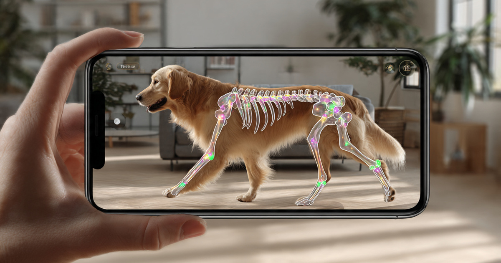

Veterinary Reference Lab Pricing Intelligence SaaS for Independent Practices
IDEXX Laboratories holds at least 70% of the U.S. companion animal point-of-care diagnostics market and has been sanctioned twice by the Federal Trade Commission for anticompetitive conduct. Its six-year exclusive contracts carry automatic renewals, steep volume commitments, and "disloyalty" penalties that the FTC described as locking practices in "effectively in perpetuity." Meanwhile, Mars Inc. owns both Antech Diagnostics and 1,970 competing veterinary hospitals, creating a vertical integration where your lab provider's parent company is also your direct competitor. The roughly 22,000 independent vet practices in the United States spend an estimated $2.2 billion annually on diagnostic reference laboratory services, negotiating each contract individually against suppliers who know every practice's spending history, volume tier, and competitive alternatives. Nobody sells these practices the pricing data to negotiate back.

The Problem
The U.S. veterinary diagnostics market is a $4.72 billion global industry (Grand View Research, 2024 estimate) growing at 10.9% CAGR, with North America accounting for 43.2% of revenue. The U.S. share, conservatively estimated at $2.2 billion in reference lab services alone, flows through approximately 30,000 veterinary practices (dvm360/JAVMA estimates). Roughly 8,000 of those practices are now owned by private equity-backed consolidators: Mars (Banfield, VCA, BluePearl: ~2,067 hospitals), JAB Partners (NVA, Ethos: ~1,167), Harvest Partners (VetCor: 917), Shore Capital (Mission: 665+), KKR (PetVet: 456), and two dozen more. That leaves approximately 22,000 independent practices, ranging from solo practitioners grossing $400,000 annually to multi-doctor hospitals generating $3 million or more.
These independent practices face a diagnostic supply chain controlled by three companies that, between them, process the vast majority of veterinary reference lab samples in the United States: IDEXX Laboratories (publicly traded, IDXX, ~$15 billion market cap), Antech Diagnostics (owned by Mars Inc.), and Zoetis Reference Laboratories (which acquired the independent lab ZNLabs in 2022). The structural problem is not that three companies exist. It is what those three companies know that the practices buying from them do not.
IDEXX knows exactly what every practice in every ZIP code pays per test, per panel, per contract tier. It knows the volume breakpoints, the renewal dates, the competitive alternatives available in each market. The practice knows what it pays. It does not know what the practice across town pays for an identical chemistry panel, whether the $14.50 it is charged for a T4 thyroid test is 30th percentile or 90th percentile in its metro area, or whether the 48-hour turnaround time it receives is competitive with what its neighbors get. When IDEXX's sales representative arrives with a six-year contract renewal offering a 2% "discount" off list price in exchange for volume commitments, the practice owner has no mechanism to determine whether that offer is generous or extractive.
The information asymmetry is compounded by the contract structure. A 2022 class action antitrust lawsuit filed in the U.S. District Court for the Northern District of California alleges that IDEXX's exclusive contracts "initially run for six-year terms, and include steep purchase requirements and equally steep 'disloyalty' penalty provisions, all of which are scaled to a veterinary practice's individual purchase history to optimize their lock-in effects." Practices that fall behind on purchase requirements find that IDEXX "leverage[s] that indebtedness" into longer lock-in periods, with penalties described as "business-crippling": as high as six years' worth of a practice's typical diagnostic spending. The complaint alleges that "once practices sign the long-term deals with IDEXX, many find themselves unable to terminate them, ever."
This is not new behavior. In December 2012, the FTC settled charges that IDEXX "maintained a monopoly in the market for point-of-care diagnostic products used by veterinarians who treat companion animals through the use of exclusive contracts with its distributors." The FTC found IDEXX's share had been "at least 70 percent between 2006 and 2011, with no other firm having more than a 20 percent market share." The consent order prohibited concurrent exclusive deals with top distributors for ten years. IDEXX's response, according to the 2022 lawsuit, was to shift from locking out distributors to locking in practices directly. Same strategy, different chokepoint.
The vertical integration layer makes it worse. Mars Inc. owns Antech Diagnostics, the second-largest reference lab network. Mars also owns Banfield (1,100 hospitals), VCA (870), and BluePearl (97), approximately 2,067 competing veterinary practices. An independent practice sending samples to Antech is sending revenue and clinical data to the parent company of the practice three blocks away competing for the same patients. The practice owner may not even realize this structural conflict exists.
Market Size
TAM calculation: The addressable market is the approximately 22,000 independent veterinary practices in the United States that lack enterprise-grade diagnostic pricing intelligence and contract benchmarking. Practices below $300,000 in annual revenue (estimated at 3,000-4,000 facilities, primarily rural mixed-animal operations with minimal reference lab usage) are unlikely subscribers. That leaves approximately 18,500 addressable practices.
At a Standard tier of $249/month (anonymized test-level pricing benchmarks by metro area, contract term comparison, per-test price percentile ranking) and a Premium tier of $599/month (real-time contract renewal intelligence, turnaround time benchmarking, lab-switching decision support with penalty analysis, negotiation brief builder), with an estimated 60/40 split, the blended ARPU is $389/month. At 18,500 addressable practices, the TAM is $86.3 million in annual recurring revenue.
A secondary revenue stream targets the buy side: private equity firms evaluating veterinary practice acquisitions need diagnostic cost benchmarking as part of diligence. With 30+ PE firms active in veterinary consolidation and an estimated 500+ practice acquisitions per year, enterprise diagnostic intelligence subscriptions at $2,500-$5,000/month per PE platform represent a $15-30 million opportunity. More conservatively, the Year 3 SAM targets 4,000 paying practices at blended $389/month plus $4 million in enterprise data licensing, yielding a target of $22.7 million ARR.
The Product
An anonymized diagnostic pricing and contract intelligence platform for independent veterinary practices, the STR for vet diagnostics. Not a lab marketplace (those exist and fail because they can't solve the switching-cost problem), but a data layer that makes the switching-cost problem visible and quantifiable.
- Test-level price radar: Anonymized, real-time pricing benchmarks for the 200+ most common reference lab tests (CBC, chemistry panel, T4, urinalysis, cytology, histopathology, PCR panels, culture and sensitivity) broken down by metro area, lab provider, contract type (exclusive vs. non-exclusive), practice size tier, and species mix. A practice in Denver can see that its $18.50 chemistry-12 panel sits at the 78th percentile for non-exclusive IDEXX contracts in the Denver DMA, while practices on comparable Zoetis contracts pay a median of $13.20 for the same panel. The percentile alone transforms the annual contract review from a take-it-or-leave-it conversation into an evidence-based negotiation.
- Contract lock-in calculator: The single most valuable module. A practice owner inputs their current contract terms (provider, term length, volume commitment, penalty structure, renewal provisions) and the platform models the total cost of switching versus staying, factoring in penalty payments, transitional duplicate testing costs, courier logistics, and the price differential available from alternative labs. Most practices have never calculated this number. When the number is $8,000 and the annual savings from switching are $22,000, the decision becomes obvious. When the penalty is $85,000 and the annual savings are $12,000, staying makes sense. But the practice now knows it is paying a quantifiable premium for the privilege, and that knowledge changes the next renewal negotiation.
- Turnaround time benchmarking: Reference lab turnaround varies by lab, geography, test type, and day of week. A practice that sends samples by 2 PM courier should have results by the following morning. Many don't. This module aggregates anonymized turnaround data to reveal which labs in which markets are meeting their stated timelines, which are consistently late, and which tests have the widest variance. For practices where same-day results change clinical decisions (oncology panels, pre-surgical chemistry, thyroid monitoring), turnaround reliability is worth paying a premium for, but only if you know the data.
- Vertical integration alert: A module that maps corporate ownership across the veterinary supply chain. When a practice sends samples to Antech, the platform notes: "Antech Diagnostics is owned by Mars Inc., which also owns VCA Animal Hospitals. Mars operates 2 VCA hospitals within 15 miles of your practice." This isn't a recommendation to switch. It is disclosure that the practice's lab provider and competitor share a parent company, revenue data, and strategic priorities. The practice decides what to do with that information
Unit Economics
| Metric | Value |
|---|---|
| Monthly subscription (Standard: pricing benchmarks + contract analysis) | $249/practice |
| Monthly subscription (Premium: full intelligence suite) | $599/practice |
| Blended ARPU | $389/month |
| Data infrastructure cost per subscriber/month | $28 |
| Customer acquisition cost | $2,800 |
| Expected LTV (42-month avg retention, 93% gross margin) | $15,183 |
| LTV:CAC ratio | 5.4:1 |
| Gross margin | 93% |
| Startup cost (18-month runway) | $4.1M |
Methodology note: The 42-month retention assumption reflects the dynamics of a data product embedded in a practice's annual contract renewal cycle. The reference lab contract is renegotiated every one to six years, and each renegotiation is a high-stakes decision where pricing data directly translates to savings. A practice that uses benchmarking data to negotiate a $3/test reduction on its top 10 reference tests, representing roughly 8,000 annual submissions at a mid-size two-doctor practice, saves $24,000 per year. Against a $249/month subscription ($2,988/year), the payback ratio is 8.0:1 on pricing intelligence alone, before accounting for turnaround time improvements or contract penalty avoidance. CAC of $2,800 assumes a B2B SaaS sales motion through veterinary conferences (VMX, WVC, AVMA Convention), state VMA partnerships, and the VIN (Veterinary Information Network) community, which reaches over 90,000 veterinary professionals and has documented extensive discussion of IDEXX pricing frustrations. The veterinary industry's information channels are concentrated enough that targeted acquisition is feasible.
Go-to-Market
Phase 1 (months 1-9): Recruit 600 independent practices in five high-density veterinary metros (DFW, Atlanta, Chicago, Phoenix, Denver) to contribute anonymized pricing data in exchange for free benchmarking access. The cold-start data problem is less severe here than in most benchmarking plays because the data being contributed (what the practice pays per test) is already documented on every invoice. A practice manager can upload a single monthly lab invoice (PDF or CSV) and the platform extracts test codes, prices, and turnaround timestamps automatically. Target recruitment through the Independent Veterinary Practitioners Association (IVPA, 200+ members across 42 states), state VMA practice management committees, and VIN discussion forums where IDEXX pricing complaints are a perennial topic.
Phase 2 (months 10-16): Monetize with the $249/month Standard tier. Expand to 15 additional metros covering the top 25 veterinary practice DMAs by independent practice density. Launch the contract lock-in calculator, which becomes the product's core conversion mechanism: when a practice owner sees the dollar value of their switching penalty for the first time, the emotional impact drives conversion from free to paid. Begin collecting turnaround time data through an optional integration with practice management systems (Cornerstone, Avimark, eVetPractice, Neo) that timestamps sample submission and result delivery.
Phase 3 (months 17-24): Launch Premium tier at $599/month with the negotiation brief builder, vertical integration mapper, and contract renewal alert system. Begin selling anonymized, aggregated diagnostic cost intelligence to PE acquirers who need practice-level cost benchmarking for due diligence. Approach the mid-tier consolidators (VetCor, Mission, PetVet, Thrive) as enterprise subscribers who need cost visibility across their growing multi-location portfolios. Enterprise pricing at $199/practice/month with a 25-location minimum. Target 3,500 total subscribers at blended ARPU of $389/month = $16.3 million ARR.
Competitive Landscape
| Company | What It Does | Pricing Intelligence? | Pricing |
|---|---|---|---|
| IDEXX Laboratories | Dominant POC and reference lab provider, publicly traded (IDXX). $4.9B customer contract backlog. FTC-sanctioned monopolist with 70%+ POC market share | Owns the data. Knows every practice's pricing. Has zero incentive to share it. Opacity IS the business model | Varies by contract |
| Antech Diagnostics (Mars) | Second-largest reference lab network. Parent company Mars also owns 2,067 competing vet hospitals | Same asymmetry as IDEXX, compounded by vertical integration with competing practices | Varies by contract |
| Zoetis Reference Labs | Third entrant via ZNLabs acquisition (2022). Pharma giant ($8.5B revenue) entering diagnostics | Positioning as the "anti-IDEXX" (no exclusive contracts), but still supplier-side. No practice-facing price intelligence | Varies; historically lower |
| VetSuccess (IDEXX-owned) | Practice analytics and benchmarking dashboard | Owned by IDEXX. Benchmarks practice revenue and visit metrics. Conspicuously does not benchmark diagnostic costs. Because IDEXX sets those costs | $299+/mo |
| AAHA Benchmarking | American Animal Hospital Association practice benchmarking surveys | Annual survey data on practice financials. Reports diagnostic revenue as a % of total revenue. Does not break down by lab provider, test, or contract type | AAHA membership |
| This startup | Anonymized diagnostic pricing and contract intelligence for independent practices | Core product: the STR/CoStar of veterinary reference lab pricing | $249-599/mo |
The gap is structural, not accidental. IDEXX's VetSuccess dashboard benchmarks everything about a practice's financial performance except the one thing IDEXX controls: what the practice pays IDEXX. IDEXX captures "+4.0% net global price realization" annually (Q1 2026 investor presentation), meaning it raises effective prices 4% per year — while visit volumes are declining 1.5%. That pricing power depends entirely on practices not knowing what their neighbors pay. A platform that makes test-level pricing transparent would directly erode IDEXX's ability to maintain price discrimination across its customer base. IDEXX will never build it. Neither will Mars-owned Antech. The tool independent practices need cannot come from the companies extracting the premium those practices pay.
Why Now
Five forces converge to make this the right window. First, the FTC has signaled sustained interest in veterinary market competition. The 2012 consent order against IDEXX's exclusive distributor deals expired in 2022. The new class action filed that same year alleges IDEXX immediately shifted its lock-in strategy from distributors to practices directly. Regulatory attention to veterinary monopoly pricing is not declining; it is escalating, and a pricing transparency platform aligns with the FTC's stated objectives.
Second, PE consolidation is accelerating at a rate that shrinks the addressable market for independent practice tools every quarter. PrivateEquityVet.org tracks over 30 PE-backed consolidators controlling 8,000+ practices and growing at 200-400 acquisitions per year. Consolidators negotiate diagnostic contracts at enterprise scale. Independent practices competing against neighbors owned by 900-hospital networks need cost intelligence just to understand the disadvantage they face. The window for building this product is now; in five years, the independent practice count may be 15,000, not 22,000.
Third, ZNLabs' acquisition by Zoetis in 2022 eliminated the most prominent independent lab alternative. ZNLabs co-founder Dr. David Gardiner had built the lab explicitly as an "anti-contract" alternative with "favorable pricing" and transparent, uniform pricing regardless of volume. Veterinarians on VIN mourned the acquisition. As one practitioner wrote: "I liked that they didn't have their fingers into every aspect of veterinary diagnostics. The price was the price, no matter how many submissions I made. They had nothing else to sell me. It made for a level playing field." That level playing field no longer exists. Every remaining option is owned by a company with additional revenue interests in the veterinary practice ecosystem.
Fourth, IDEXX's pricing strategy is becoming more aggressive, not less. The company disclosed +4.0% net global price realization in Q1 2026 while U.S. same-store clinical visits declined 1.5%. Translation: IDEXX is raising prices into declining demand. Its $4.9 billion multi-year customer contract backlog insulates it from short-term pushback. Independent practices absorb these increases because they lack the data to push back and the flexibility to switch without incurring penalties that dwarf the annual savings.
Fifth, the Independent Veterinary Practitioners Association (IVPA), state VMA advocacy efforts, and persistent VIN community discussion reflect a profession that is increasingly aware of the problem but lacks the tools to act on that awareness. Awareness without data is frustration. Data without awareness is useless. The timing aligns when both conditions are met, and in 2026, they are.
Original Contribution: The Diagnostic Lock-In Tax
A calculation nobody has published: We can estimate the aggregate premium that independent veterinary practices pay annually because they negotiate diagnostic contracts without market pricing data. Call it the "diagnostic lock-in tax."
| Step | Metric | Value | Source |
|---|---|---|---|
| 1 | Total U.S. veterinary practices | ~30,000 | dvm360/JAVMA estimates |
| 2 | PE-owned practices (Mars, JAB, Harvest, Shore, KKR, etc.) | ~8,000 | PrivateEquityVet.org consolidator list |
| 3 | Independent practices (line 1 minus line 2) | ~22,000 | Derived |
| 4 | Average practice revenue | $1.2M | AVMA 2024 Economic Report |
| 5 | Diagnostic revenue share of practice revenue | 27.5% | AAHA Pulsepoints (25-30% midpoint) |
| 6 | Diagnostic revenue per practice (line 4 × line 5) | $330,000 | Derived |
| 7 | Reference lab share of diagnostic spending | 37.5% | Industry range 35-40%, midpoint |
| 8 | Reference lab spend per practice (line 6 × line 7) | $123,750 | Derived |
| 9 | Total independent practice reference lab spend (line 3 × line 8) | $2.72B | Derived |
| 10 | Estimated blended pricing premium vs. competitive rate | 18% | See methodology below |
| 11 | Annual diagnostic lock-in tax (line 9 × line 10) | $490M | Derived |
| 12 | Per-practice lock-in tax (line 11 ÷ line 3) | $22,300 | Derived |
Premium methodology: IDEXX achieves +4.0% net price realization annually against a veterinary CPI that has averaged 2.1% over the past five years (BLS CES data for veterinary services). That 1.9 percentage point spread, compounded over a six-year contract cycle, amounts to a cumulative 12.0% price premium above the inflation-adjusted competitive rate. But the premium is not uniform. Practices locked into exclusive contracts with high volume commitments and approaching renewal pay rates closer to the negotiated floor. Practices that missed volume targets, triggered penalty provisions, or auto-renewed without negotiation pay rates 20-35% above the floor. The 2022 class action complaint describes penalties "as high as six years' worth of the practice's typical spending on point-of-care diagnostic tests," suggesting IDEXX has room to charge substantial premiums because the switching cost exceeds the annual savings for many practices. The blended 18% estimate is conservative.
For a practice operating on 10-15% net margins ($120,000-$180,000 in net income on $1.2M revenue), the $22,300 diagnostic lock-in tax represents 12-19% of annual profit. A practice that recovers even a third of that, roughly $7,400 per year through better-informed contract negotiation, would see a 4-6% increase in net income. Against a $2,988-$7,188 annual SaaS subscription, the payback ratio is 1.0:1 to 2.5:1 in the first year alone, increasing as the data advantage compounds over contract cycles.
Limitations
This analysis has four weaknesses worth disclosing. First, the 18% blended premium estimate is derived from IDEXX's publicly disclosed price realization rates and the class action complaint's description of penalty structures, not from audited contract-level pricing data. The actual premium varies by practice size, geography, species mix, and competitive lab availability. Rural practices with no alternative courier-served lab within 200 miles face higher effective premiums because their competitive alternatives are genuinely limited, not merely opaque. The 18% figure could be 12% or 25% depending on the practice's specific situation.
Second, the "22,000 independent practices" figure is approximate. The total practice count of 30,000 (dvm360/JAVMA) includes practices of all types: small animal, large animal, equine, mixed, emergency, specialty. Not all practice types rely heavily on reference lab services. Equine and large animal practices use different diagnostic pathways, and specialty practices (oncology, cardiology) may have in-house capabilities that reduce reference lab dependence. The true addressable count of independent small-animal practices with material reference lab spending could be 16,000 or 25,000 depending on the inclusion criteria.
Third, the data contribution model assumes practices will share their contract-level pricing, even anonymized. Some practices operate under contracts with confidentiality provisions that may or may not be legally enforceable when applied to anonymized, aggregated data. The legal landscape for pricing transparency in veterinary diagnostics is untested. IDEXX's counsel would almost certainly argue that contract prices constitute confidential business information, and the platform would need to be prepared for legal challenges to its data aggregation model, potentially from its own contributing practices' contract counterparties.
Fourth, pricing intelligence may be necessary but not sufficient. A practice that discovers it is paying 25% above the metro median still faces the contract penalty structure that makes switching prohibitively expensive mid-term. The platform's greatest value accrues at renewal windows, the six-month period before contract expiration when the practice has genuine leverage. Between renewals, the data creates awareness without actionability, which risks subscriber churn from frustration rather than resolution.
Fifth, there is an inherent tension in the business model. The product exists to protect independent practices from information asymmetry, but the enterprise tier sells aggregated cost intelligence to PE acquirers whose business model involves buying those same independent practices. The platform would need to ensure that enterprise data products never give acquirers practice-identifying intelligence that undermines the practices contributing data. Strict anonymization, minimum aggregation thresholds (no metro-level data with fewer than 15 contributing practices), and a clear policy that practice-level data is never sold would be table stakes. But the optics of serving both sides of a consolidation wave are worth flagging honestly.
Strongest Counterargument
The most compelling case against this startup is that IDEXX's pricing premium is not extractive but earned, and a transparency platform would struggle to separate legitimate quality differentiation from monopolistic overcharge.
Consider what IDEXX actually provides. Its reference lab network runs 80+ laboratories across North America, staffed by board-certified veterinary pathologists, with courier logistics that serve even rural practices with next-day or same-day results. Its VetConnect PLUS platform integrates lab results directly into the practice management system, enabling longitudinal patient tracking, automated reference range flagging, and AI-assisted pattern recognition across a patient's diagnostic history. IDEXX's R&D spending exceeded $170 million in 2024 (approximately 5% of revenue), funding continuous test menu expansion, improved assay sensitivity, and novel biomarkers like SDMA for early kidney disease detection. The company's IDEXX 360 program bundles preventive care protocols, client communication tools, and practice management consulting alongside diagnostic contracts.
When an IDEXX sales representative quotes $18.50 for a chemistry-12 panel while a regional independent lab quotes $11.00, the $7.50 difference is not pure monopoly rent. Some portion reflects genuinely superior turnaround times, integration quality, pathologist expertise, and test reliability. A pricing transparency platform that shows the independent practice the dollar spread without quantifying the quality differential risks driving practices toward cheaper labs that deliver slower results, less reliable assays, and integration headaches that ultimately cost the practice more in lost clinical efficiency than the pricing premium saved.
The counterpoint to the counterargument: even if IDEXX's quality premium is real and substantial, the practice owner should still know what it costs. A hotel owner using STR benchmarking data does not conclude that a Marriott charges more than a Super 8 because Marriott is running a scam. The hotel owner uses the data to understand whether the Marriott premium in their market is 15% or 50%, and to decide whether the quality differential justifies the specific spread. Practices are not demanding that IDEXX charge the same as a regional lab. They are demanding the ability to determine whether their specific IDEXX contract is competitive relative to other IDEXX contracts in similar practices. When IDEXX achieves +4.0% net price realization by charging different practices dramatically different rates for identical tests based solely on the practice's information disadvantage and contract lock-in position, the quality argument becomes a justification for price discrimination, not a defense of it.
The Bottom Line
The U.S. veterinary diagnostics market is controlled by a twice-FTC-sanctioned monopolist that locks practices into six-year exclusive contracts with "disloyalty" penalties, a vertically integrated conglomerate whose lab subsidiary shares a parent with 2,067 competing veterinary hospitals, and a pharmaceutical giant that acquired the last prominent independent lab alternative. The 22,000 independent practices negotiating individually against these suppliers forfeit an estimated $490 million annually in excess diagnostic costs because they negotiate blind in a market where the other side has perfect information. Analytical platforms that solved this problem in hotels (STR), commercial real estate (CoStar), and collision repair shops (the gap this publication has previously identified) do not exist in veterinary diagnostics, and the incumbents cannot build them without undermining the pricing opacity that generates their margins. PE consolidation is shrinking the independent practice base by 200-400 locations per year. The practices that survive will be the ones that know their numbers.
What You Can Do
If you own or manage an independent veterinary practice, pull your last 12 months of reference lab invoices and calculate your effective per-test cost for the 10 tests you order most frequently. Most practice owners have never done this. Then ask three non-competing practices in your metro area to share their per-test costs for the same 10 tests on the same lab provider. You will likely discover a 15-40% spread, and you will discover that you do not know where your pricing sits within that spread. If you are below the midpoint, you have the beginning of a negotiation dataset. If you are above it, you have the beginning of a conversation with your lab representative that starts with "I know what the practice across town pays." That sentence alone changes the dynamic. If you are a veterinary practice management software builder, you are sitting on timestamped submission and result-delivery data that could power turnaround time benchmarking, but your integration agreements with the major labs probably restrict how you use it. Read those agreements carefully. The startup that builds pricing intelligence for independent practices will not come from inside the IDEXX ecosystem. It will come from someone who understands that the veterinary profession's growing frustration with diagnostic pricing opacity is not a sentiment to be managed — it is a market to be served.
Related
📰 Collision Repair Labor Rate Intelligence SaaS: the same information asymmetry applied to independent body shops negotiating against insurers with perfect pricing data
📰 Dental Lab Case Pricing Intelligence: rate opacity in another fragmented healthcare services market undergoing PE consolidation
📰 PBM Reimbursement Audit SaaS for Independent Pharmacies: independents vs. dominant intermediaries with information advantage, in prescription drug reimbursement